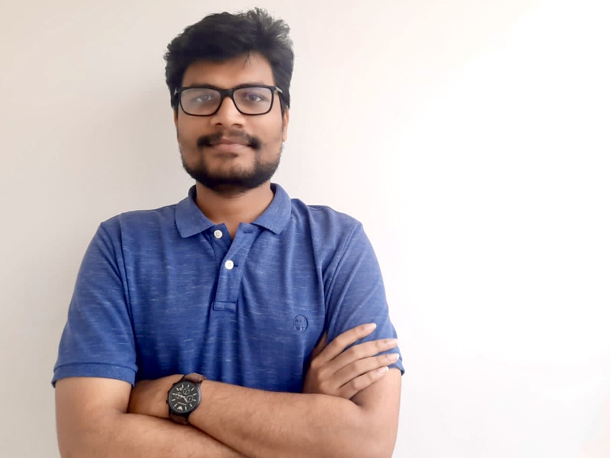

Sri Teja Allaparthi
Co-founder & CTO at Swipe. Hyderabad, India.
About
I build products and the systems behind them. Most of my time goes into Swipe, where I lead engineering as co-founder and CTO.
On the side I make small, focused developer tools and release them as open source, like placeholderkit. Lately I build a lot of it together with AI coding agents, and I enjoy making tools that work well for both people and those agents.
Before Swipe, I did my B.Tech and an MS by Research in Computer Science at IIIT Hyderabad, working with Prof. Vikram Pudi on data mining, machine learning and information retrieval.
What I'm building
Swipe
Billing, invoicing and business software for growing businesses in India.
Research
At IIIT Hyderabad my work focused on getting knowledge out of text and using it downstream: controversy detection, news classification, medical data mining, information retrieval and NLP.
-
Abstract
A deep hierarchical attention architecture that combines sentiment and semantic embeddings for fine-grained classification of news stories, motivated by the spread of misinformation online. Sentiment embeddings together with semantic information outperform several state-of-the-art methods on the task.
-
Abstract
Detects controversy on news issues by analysing people's reactions to news articles on social media, using sentiment analysis and word matching, applied to topics from the 2016 US presidential election.
Earlier projects and reports
- Medical data analysis with dynamic decision trees
- Wikipedia search engine
- Sentiment-specific word embeddings for tweets
- Reports
Journey
- nowCo-founder & CTO, Swipe.
- 2017–2018Published at IEEE ICDM Workshops and IEEE ICBK.
- IIIT-HB.Tech and MS by Research, Computer Science. Data mining, ML and IR with Prof. Vikram Pudi.
Say hello
Always happy to talk with people building startups or developer tools.